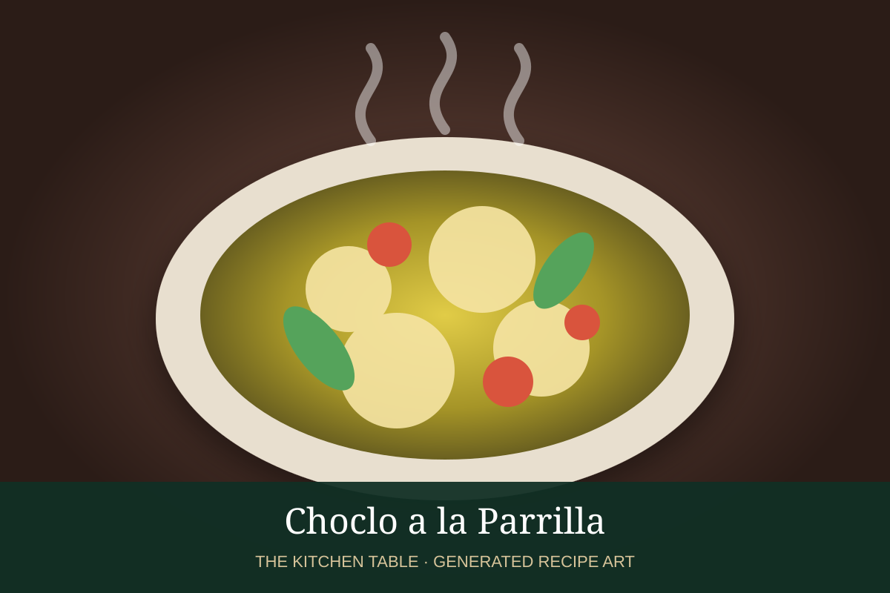

← Back to all recipes
SIDE · ARGENTINIAN
Choclo a la Parrilla
Corn grilled directly over the parrilla until smoky and charred, then finished with butter and salt.
25 minServes 4

Representative photo: Namitakhaire / Wikimedia Commons, CC BY-SA 4.0.
Ingredients
- 4 ears fresh corn, husked
- 2 tbsp melted butter or olive oil
- Kosher salt
- Freshly ground black pepper
- 2 tbsp chopped parsley or cilantro, optional
- Lemon wedges, optional
Preparation
- Heat a grill to medium-high.
- Brush the corn lightly with butter or olive oil.
- Grill, turning every few minutes, until tender and charred in spots, 10–15 minutes.
- Brush again with butter and season with salt and pepper.
- Finish with herbs and lemon, if desired, and serve immediately.